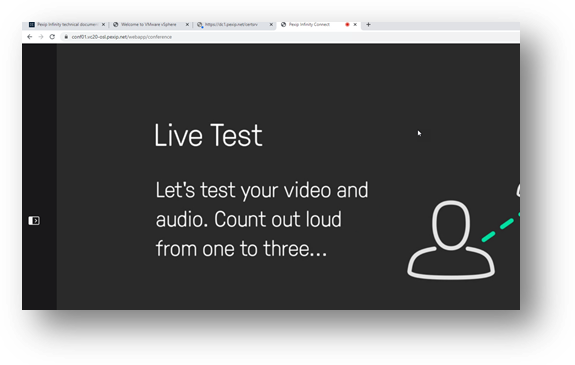

Suggested completion time: 15 minutes
Use section #4.2 of the lab sheet.
To edit the pre-existing Test Call Service, go to
Services --> Test Call Service:
- Click the already existing test call service, part of the default out-of-box Pexip deployment.
- Edit the first alias to be “testcall”.
- Add a second alias of “testcall@<Pexip Infinity domain>”, using the lab
sheet section #4.2 to find your Pexip domain.
- Click Save.
- Wait 1 minute for the change to replicate to all nodes.
Testing the test call service
Connect to the Test Call Service by dialling testcall@<Pexip Infinity domain>
- To place an internal call: For webRTC, browse to an internal Conferencing Node using one of the FQDNs from within the RDP session.
NOTE: you will
need to accept the browser security warning at this stage to get to the WebApp, as the nodes will only have
a self-signed certificate assigned (we will fix this in a later step).
NOTE2: the RDP server has a
virtual camera installed allowing you to send a test video stream, however, it seems to flicker when
multiple people use it at the same time ☹.
- To place an external call: From a hardware endpoint (if available in your lab, or externally controllable from your corporate
deployment), or another webRTC endpoint outside of the RDP session by browsing to the FQDN of the DMZ node from your own laptop.
Screenshot 3: Demonstrate your working Pexip Infinity deployment
Each person in the group places a call into the Test Call service. Ensure that at least one person calls into the
service through the LAN location, and one person calls into the same service through the external location at
the same time.
- You can connect to an internal node using a browser within the RDP session and the URL of a LAN nodes FQDN
or IP address (you will have to accept the warning for now).
- Connect to the DMZ node outside of the RDP session, from your laptop or mobile device.
Grab some screenshots of the calls in operation at the same time. Show Live View from the Management Node, and
drill down into the Test call service (but you need to be quick as these calls only last a short while).
It’s also good to show a screenshot of the actual call from the end user’s point of view, for
example:
Screenshot of the main Live View showing a Test Call service, with users connected to the DMZ and LAN
nodes:
Screenshot of the conference graph of the Test Call service showing individual
participants connected in different locations (notice how
the participants are split across locations even though there is a single service instance in
operation):
Screenshots of the user experience in the Test Call Service:
